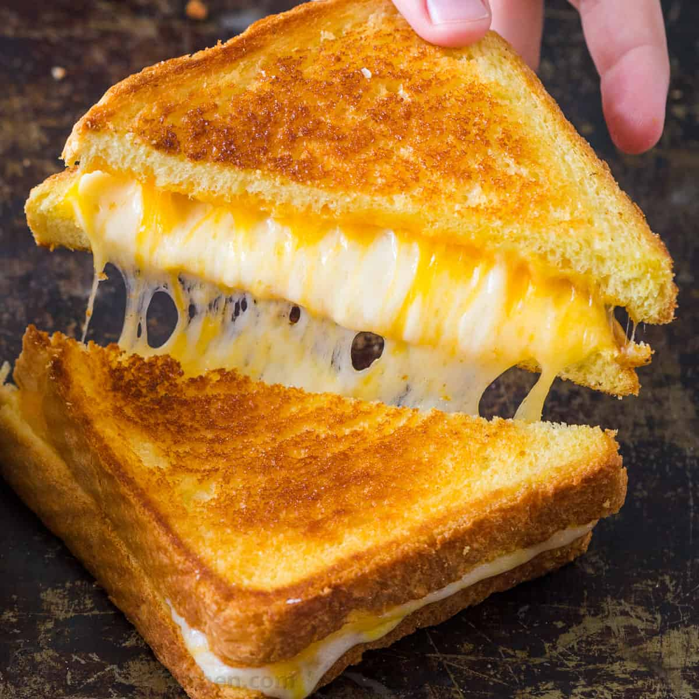

Grilled Cheese

Description
Fast and easy grilled cheese
Ingredients
Steps
- Pre-heat pan on midium-low heat
- lay butter on pan
- lay bread on buttered pan
- stack a piece of cheese and cover with another piece of bread
- after browning, flip the sandwhich to the otherside and cook till golden-brown
- serve
Home